For all generated images below, I used seed 100.
Part 0: DeepFloyd my own prompts
Golden GateBridge
Prompt: "the golden gate bridge with a beautiful sunset"
Caption/Inference Quality Analysis
With 10 inference steps the bridge looks very malformed, and we see a lot of things that are messed up/don't make sense (e.g. 2 bridge towers next to eachother). At 20 steps, almost all of these errors are gone, and we see a very coherent image, only minor error on the water below the bridge, but which is only visible if you look closely. By 50 steps, the image looks very realistic, almost like a picture was taken. You barely see any error, maybe a bit on the right end of the bridge. But this is by far the best model output.
10 Inference Steps
20 Inference Steps
50 Inference Steps
Rocket Ship Starting
Prompt: "a rocket ship starting"
Caption/Inference Quality Analysis
Here all of the different Infernce steps look alright, with a difference that after 20 steps, the image looks almost a bit comic like. The image after 50 iterations is by far the most detailed and what I would see as a good model output.
10 Inference Steps
20 Inference Steps
50 Inference Steps
Berkeley Stadium Jet Flyover.
Prompt: "two jets flying over the uc berkeley football stadium"
Caption/Inference Quality Analysis
Interestingly, here the image after 20 steps looks the best. While after 50 steps there are more details, the planes loose their shape and realistic look. They look more like jets from star wars. So I would say after 20 looks the best, while being a bit pixelated, it still made the most realistic output.
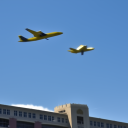
10 Inference Steps
20 Inference Steps
50 Inference Steps
Part 1: Sampling Loops
1.1 Implementing the Forward Process
Forward Function Implementation
def forward(im, t):
"""
Args:
im : torch tensor of size (1, 3, 64, 64) representing the clean image
t : integer timestep
Returns:
im_noisy : torch tensor of size (1, 3, 64, 64) representing the noisy image at timestep t
"""
with torch.no_grad():
alpha_bar_t = alphas_cumprod[t].to(im.device)
epsilon = torch.randn_like(im)
im_noisy = torch.sqrt(alpha_bar_t) * im + torch.sqrt(1 - alpha_bar_t) * epsilon
return im_noisy
Campanile at Different Noise Levels

Original (t=0)

Noise 250

Noise 500

Noise 750
1.2 Classical Denoising
Let's try to denoise these images using classical methods. Again, take noisy images for timesteps [250, 500, 750], but use Gaussian blur filtering to try to remove the noise. Getting good results should be quite difficult, if not impossible.
Gaussian Denoising Results
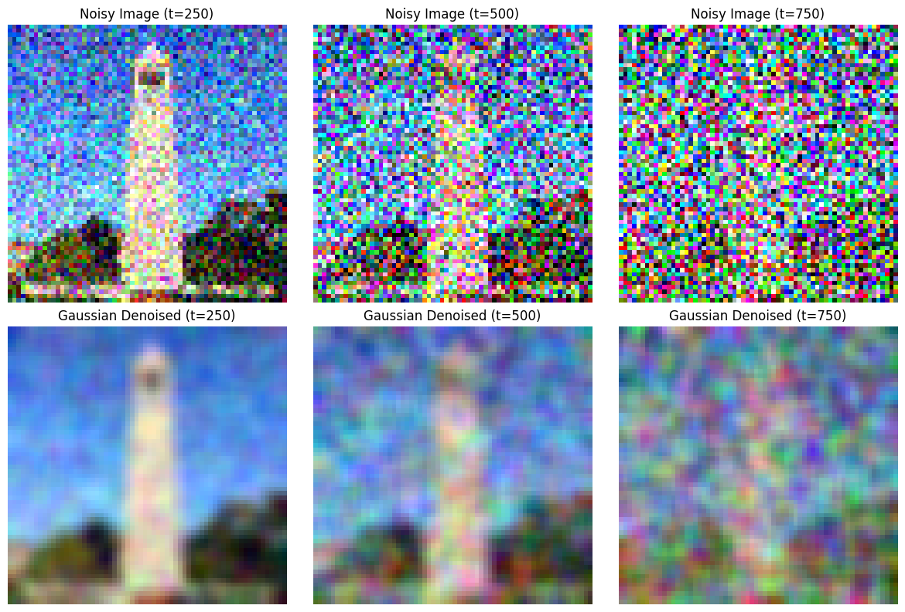
Top row: Noisy images (t=250, 500, 750). Bottom row: Gaussian denoised versions.
1.3 Implementing One Step Denoising
Now, we'll use a pretrained diffusion model to denoise. The actual denoiser can be found at stage_1.unet. This is a UNet that has already been trained on a very, very large dataset of (x0, xt) pairs of images. We can use it to recover Gaussian noise from the image. Then, we can remove this noise to recover (something close to) the original image. Note: this UNet is conditioned on the amount of Gaussian noise by taking timestep t as additional input.
Because this diffusion model was trained with text conditioning, we also need a text prompt embedding. We provide the embedding for the prompt "a high quality photo" for you to use. Later on, you can use your own text prompts.
One-Step Denoising Results
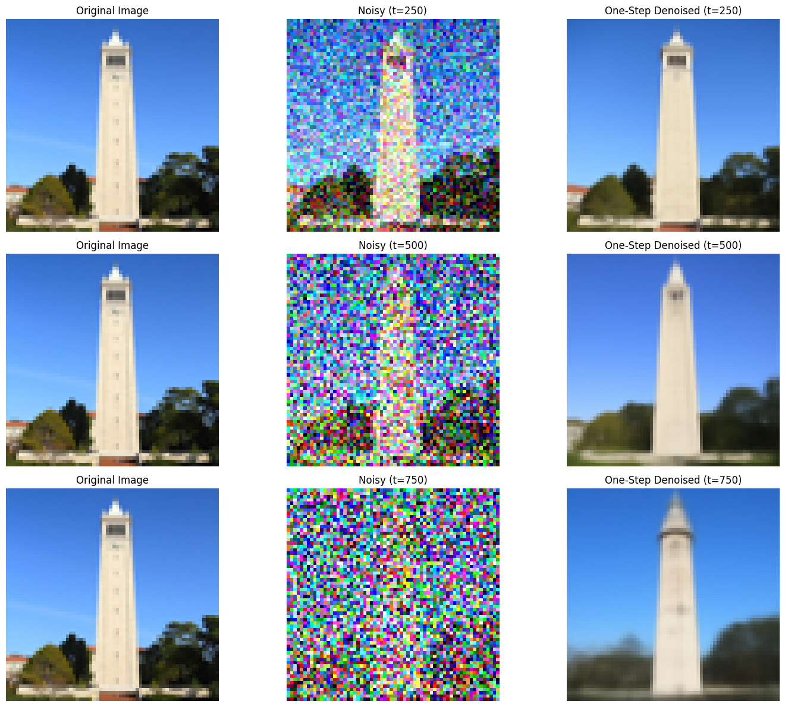
Comparison of Original (left), Noisy (center), and One-Step Denoised (right) images at different noise levels.
1.4 Implementing Iterative Denoising
In part 1.3, you should see that the denoising UNet does a much better job of projecting the image onto the natural image manifold, but it does get worse as you add more noise. This makes sense, as the problem is much harder with more noise!
But diffusion models are designed to denoise iteratively. In this part we implement this iterative process. We skip steps to speed things up, using a stride of 30 timesteps (starting at 990 and ending at 0). This creates a strided_timesteps list.
The iterative denoising process applies a specific update formula to move from a noisy image at timestep t to a less noisy image at timestep t'. This involves estimating the clean image x0 and interpolating.
Iterative Denoising Progress
Below shows the noisy Campanile at every 5th loop of the denoising process. The image gradually becomes clearer as noise is removed step-by-step.
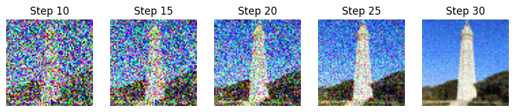
Evolution of the image during the iterative denoising process (every 5th step).
Final Results Comparison
Comparing the different denoising methods: Gaussian Blur, One-Step Denoising, and Iterative Denoising. The iterative method produces the highest quality result, recovering much of the detail lost in the noisy input.
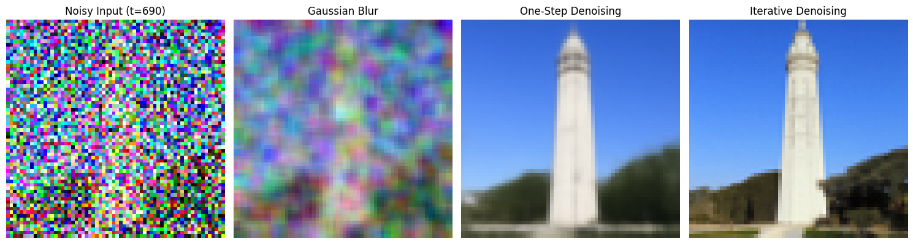
Comparison of Noisy Input (t=690), Gaussian Blur, One-Step Denoising, and Iterative Denoising.
1.5 Diffusion Model Sampling
In part 1.4, we used the diffusion model to denoise an image. We can also use the iterative_denoise function to generate images from scratch. This is done by setting i_start = 0 and passing random noise as im_noisy. This effectively denoises pure noise to create a new image. Below are 5 results using the prompt "a high quality photo".
Generated Samples
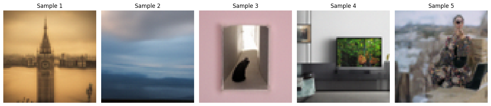
5 sampled images generated from random noise using the prompt "a high quality photo".
1.6 Classifier Free Guidance (CFG)
In order to improve the quality of generated images, we use Classifier-Free Guidance (CFG). This technique computes both a conditional noise estimate (based on a text prompt) and an unconditional noise estimate (based on an empty prompt). The final noise estimate is a linear combination of these two:
ε = εu + γ(εc - εu)
where γ controls the guidance strength. Setting γ > 1 pushes the generation towards the conditional prompt, resulting in higher quality images.
CFG Generated Samples
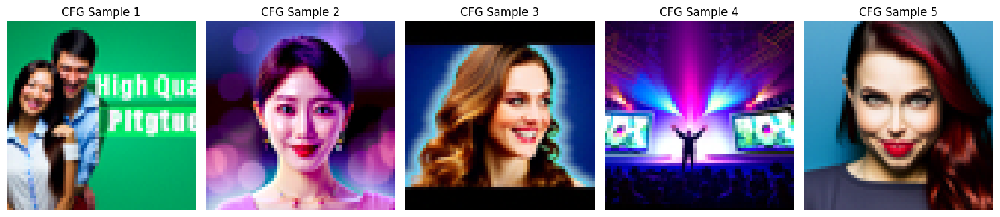
5 sampled images generated using CFG with γ=7 and the prompt "a high quality photo".
1.7 Image-to-image Translation
In this part, we apply the SDEdit algorithm. By taking an original image, adding varying levels of noise, and then denoising it using the diffusion model, we can generate variations of the original image. The more noise added (lower starting index i_start, higher timestep t), the more the model "hallucinates" and deviates from the original. As the noise level decreases, the result remains closer to the original.
SDEdit Results: Campanile
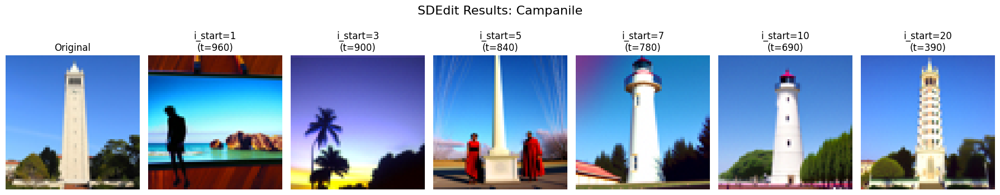
Edits of the Campanile image at different noise levels (starting indices [1, 3, 5, 7, 10, 20]).
SDEdit Results: Custom Images
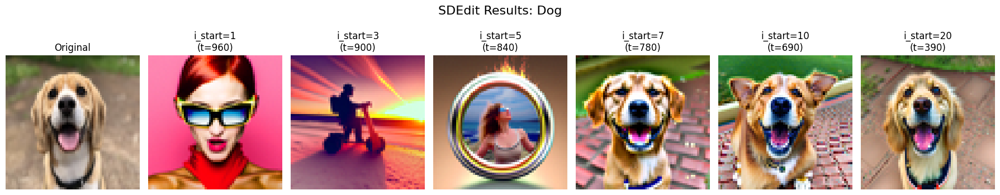
Edits of a dog image at different noise levels.
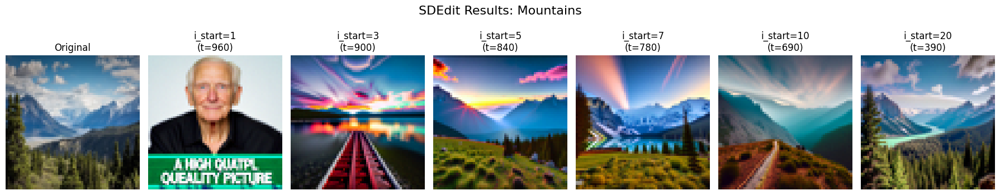
Edits of a landscape image at different noise levels.
1.7.1 Editing Hand-Drawn and Web Images
This SDEdit procedure works particularly well for projecting non-realistic images (like sketches or paintings) onto the natural image manifold. By starting with a drawing or a web image and adding noise, we can guide the diffusion model to generate a realistic version that retains the structure of the original.
Web Image Results
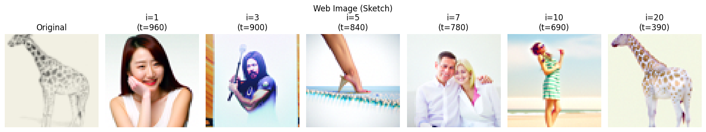
SDEdit results starting from a web image (sketch).
Hand-Drawn Sketches Results
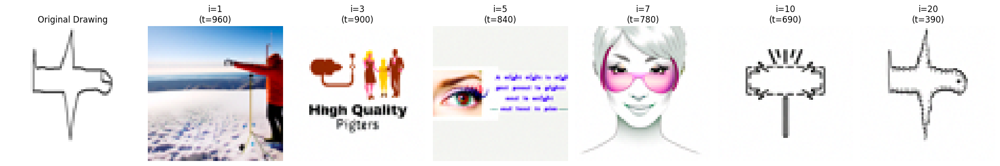
SDEdit results starting from a hand-drawn sketch (airplane).
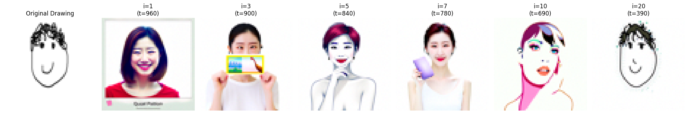
SDEdit results starting from a hand-drawn sketch (face).
1.7.2 Inpainting
Inpainting allows us to replace specific parts of an image with new content while preserving the rest. This is achieved by using a binary mask. During the diffusion denoising loop, we force the pixels outside the mask to match the original image (with appropriate noise added), while allowing the model to generate new content inside the mask.
Campanile Inpainting
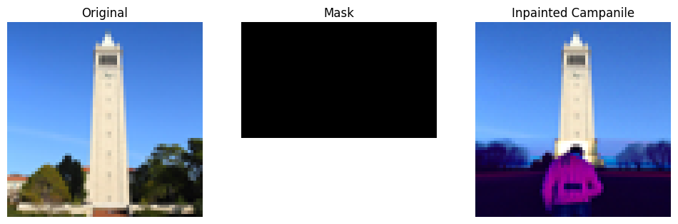
Original, Mask, and Inpainted Campanile.
Custom Inpainting Examples
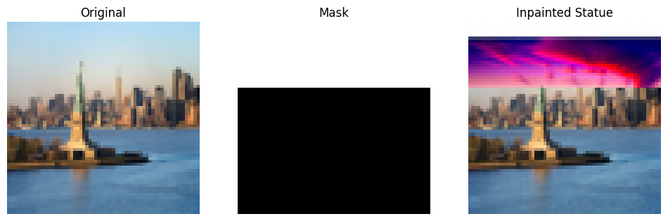
Original, Mask, and Inpainted Statue.
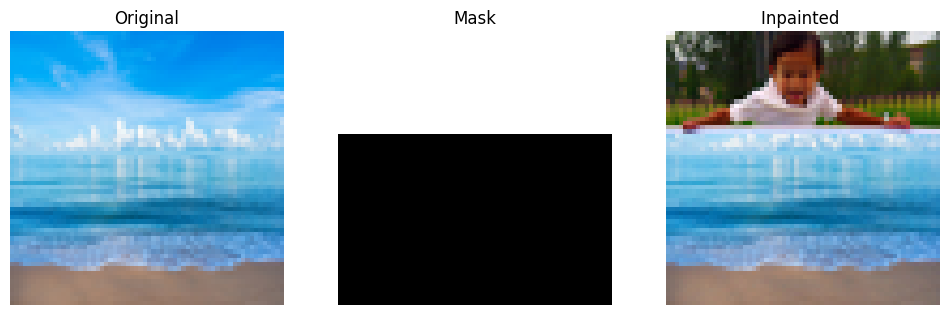
Original, Mask, and Inpainted Sea Scene.
1.7.3 Text-Conditioned Image-to-image Translation
In this section, we perform image-to-image translation guided by a text prompt. Instead of just projecting the image onto the natural image manifold, we use the text prompt to control the generation. The results show how the image transitions from the prompt description back to the original image as the noise level decreases.
Campanile → "two jets flying over the uc berkeley football stadium"
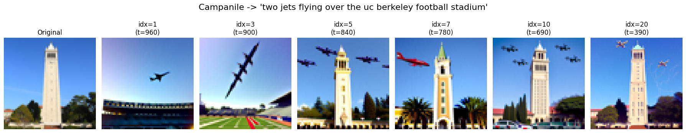
Edits of the Campanile guided by the text prompt "two jets flying over the uc berkeley football stadium" at varying noise levels.
Custom Image 1: Mountain → "the golden gate bridge with a beautiful sunset"
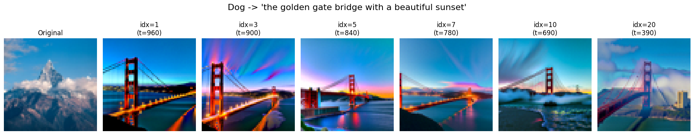
Edits of a mountain image guided by the text prompt "the golden gate bridge with a beautiful sunset".
Custom Image 2: Statue → "two jets flying over the uc berkeley football stadium"
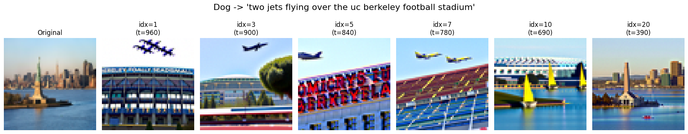
Edits of a statue image guided by the text prompt "two jets flying over the uc berkeley football stadium".
1.8 Visual Anagrams
Visual Anagrams allow us to create optical illusions using diffusion models. By averaging the noise estimates from two different prompts—one applied to the original image and one applied to a flipped version—we can generate an image that looks like one thing right-side up and something else when flipped upside down.
The algorithm proceeds as follows:
ε1 = CFG(UNet(xt, t, p1))
ε2 = flip(CFG(UNet(flip(xt), t, p2)))
ε = (ε1 + ε2) / 2
Illusion 1: Rocket ↔ Golden Gate Bridge
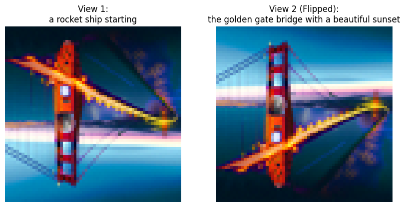
Left: "a rocket ship starting". Right: Flipped view showing "the golden gate bridge with a beautiful sunset".
Illusion 2: Jets ↔ Golden Gate Bridge
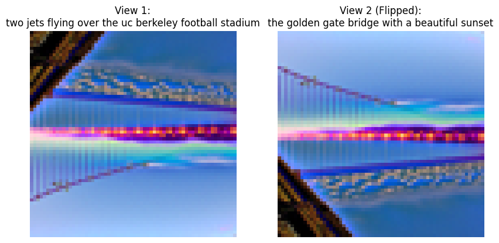
Left: "two jets flying over the uc berkeley football stadium". Right: Flipped view showing "the golden gate bridge with a beautiful sunset".
1.9 Hybrid Images
In this final part, we implement Factorized Diffusion to create hybrid images. Similar to Visual Anagrams, we combine noise estimates from two different prompts. However, instead of spatial flipping, we combine the low frequencies of one noise estimate with the high frequencies of another. This creates an image that looks like one thing from afar (low frequency) and another when viewed up close (high frequency).
The algorithm is:
ε1 = CFG(UNet(xt, t, p1))
ε2 = CFG(UNet(xt, t, p2))
ε = flowpass(ε1) + fhighpass(ε2)
Hybrid 1: Golden Gate Bridge (High Freq) + Rocket (Low Freq)
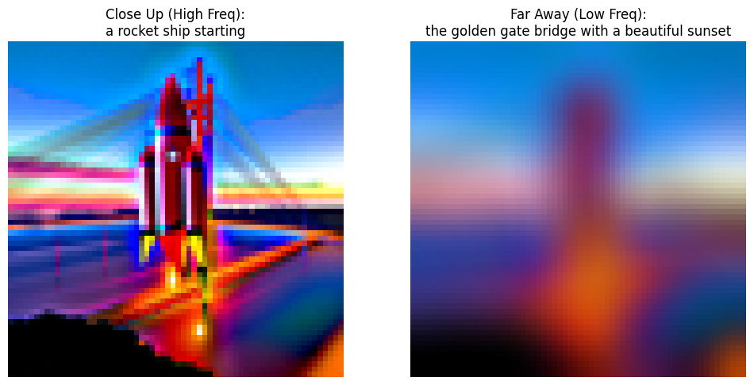
High Frequency: "the golden gate bridge with a beautiful sunset". Low Frequency: "a rocket ship starting".
Hybrid 2: Jets (High Freq) + Golden Gate Bridge (Low Freq)
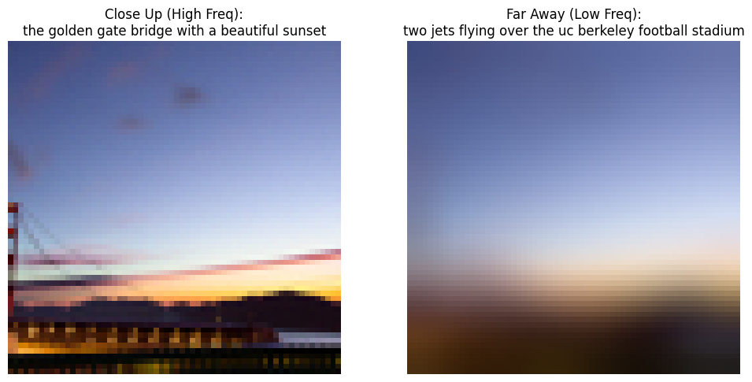
High Frequency: "two jets flying over the uc berkeley football stadium". Low Frequency: "the golden gate bridge with a beautiful sunset".
Part B: Training Diffusion Models
In this part, we train our own flow matching model on the MNIST dataset.
Part 1: Training a Single-Step Denoising UNet
We begin by training a simple one-step denoiser. Given a noisy image z, we train a denoiser Dθ to map z to a clean image x by optimizing an L2 loss.
1.1 Implementing the UNet
The denoiser is implemented as a UNet, consisting of downsampling and upsampling blocks with skip connections. The architecture includes standard operations like Conv2d, BatchNorm2d, GELU, ConvTranspose2d, and AvgPool2d. The model uses composed operations to increase depth without changing tensor dimensions, except where downsampling or upsampling is explicitly performed.
1.2 Using the UNet to Train a Denoiser
To train the denoiser, we generate training pairs (z, x) by adding noise to clean MNIST digits. The noising process is defined as z = x + σ * ε, where ε is random Gaussian noise.
Noising Process Visualization
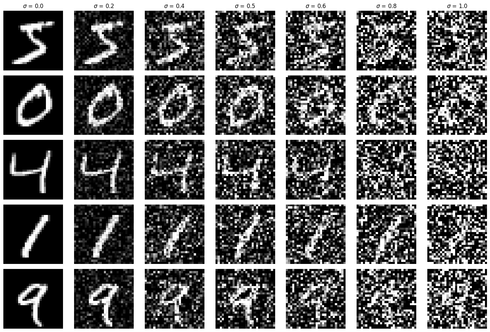
Visualization of the noising process with varying noise levels (σ).
1.2.1 Training
We trained the UNet denoiser on the MNIST dataset for 5 epochs using an Adam optimizer (lr=1e-4) and a batch size of 256. The hidden dimension D was set to 128.
Training Loss Curve
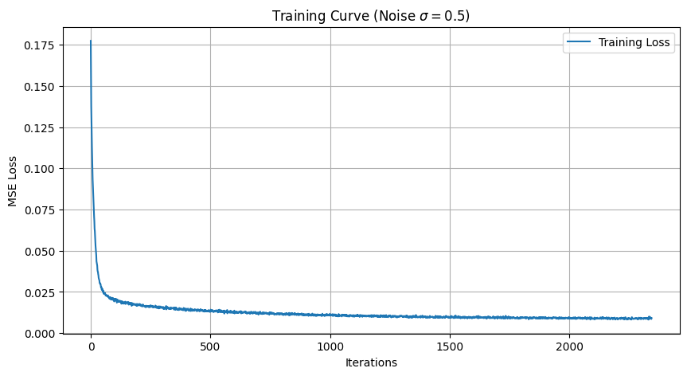
Training loss curve over iterations.
Denoising Results (Epoch 1 vs Epoch 5)
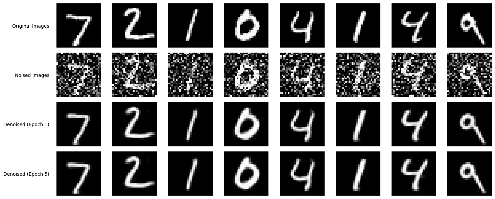
Sample denoising results on the test set (σ=0.5) after Epoch 1 and Epoch 5.
1.2.2 Out-of-Distribution Testing
The denoiser was trained with a specific noise level (σ=0.5). Here, we test its performance on noise levels it wasn't explicitly trained for.
Out-of-Distribution Results
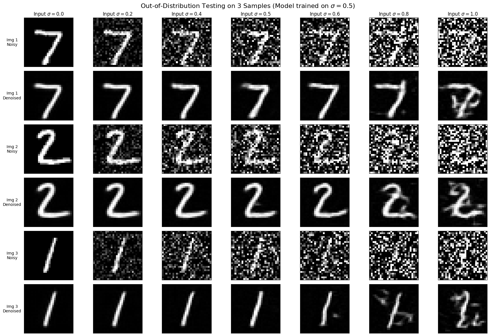
Denoising results on test set digits with varying, out-of-distribution noise levels.
1.2.3 Denoising Pure Noise
We repeated the training process, but this time trying to denoise pure noise (σ=1.0, essentially starting from a blank canvas) to a clean image.
Training Loss Curve (Pure Noise)
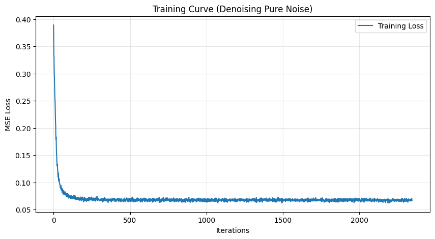
Training loss curve for denoising pure noise.
Pure Noise Denoising Results
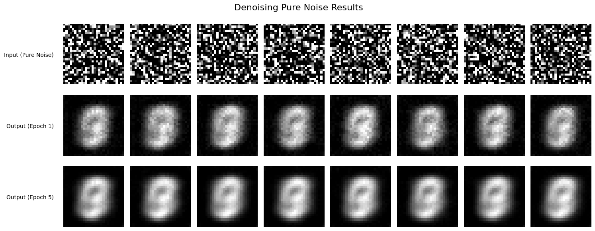
Sample results of denoising pure noise after Epoch 1 and Epoch 5.
Observed Patterns Analysis
The images generated from pure noise resemble blurry, averaged amalgams of various digits rather than distinct numbers. Instead of producing a clear '3' or '7', the output looks like a superposition of multiple digits from the training set.
This phenomenon occurs because the model minimizes Mean Squared Error (MSE) without any conditioning signal. In the absence of information guiding it toward a specific digit, the optimal strategy to minimize MSE is to predict the mean of the possible outcomes. This effectively results in the model outputting the "centroid" or average of the MNIST dataset's digit distribution—a blurry, ambiguous shape that minimizes the expected squared distance to all training examples.
Part 2: Training a Flow Matching Model
We just saw that one-step denoising does not work well for generative tasks. Instead, we need to iteratively denoise the image, and we will do so with flow matching. Here, we will iteratively denoise an image by training a UNet model to predict the "flow" from our noisy data to clean data. In our flow matching setup, we sample a pure noise image z and generate a realistic image x.
2.1 Adding Time Conditioning to UNet
We inject a scalar timestep t into our UNet to condition it. This allows the model to know "where" it is in the denoising process. We use Fully-Connected Blocks (FCBlocks) to modulate the features in the UNet based on the timestep.
UNet Architecture with Conditioning
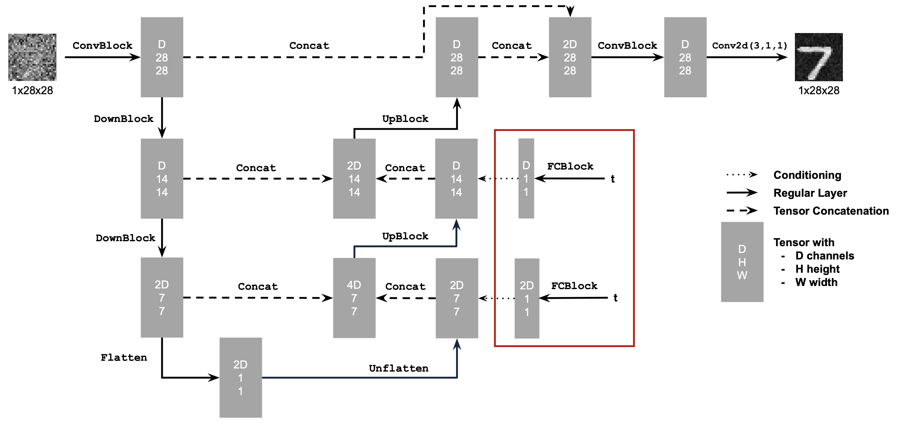
Diagram of the Time-Conditioned UNet.
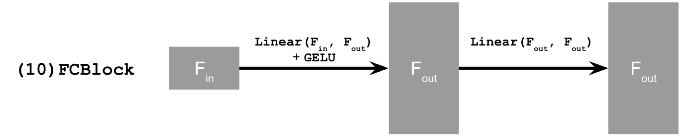
Diagram of the FCBlock used for injecting conditioning signals.
2.2 Training the Time-Conditioned UNet
We train the time-conditioned UNet to predict the flow (velocity) from noisy data to clean data. We pick a random image x, a random timestep t, generate noisy image xt, and train the model to approximate the vector field velocity.
Training Algorithm
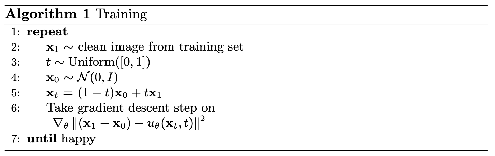
Algorithm B.1: Training the time-conditioned UNet.
Training Loss Curve
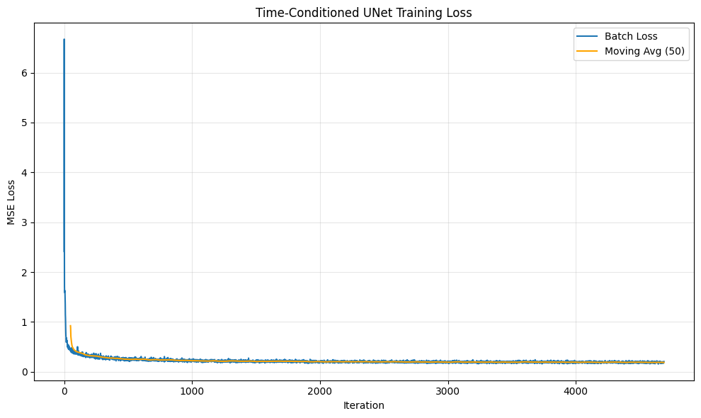
Training loss curve for the time-conditioned UNet.
2.3 Sampling from the Time-Conditioned UNet
Using the trained UNet, we can perform iterative denoising (sampling) to generate images from pure noise.
Sampling Algorithm
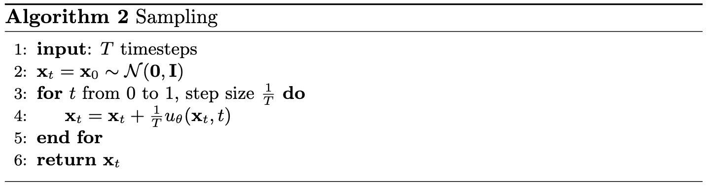
Algorithm B.2: Sampling from the time-conditioned UNet.
Sampling Results (Epochs 1, 5, 10)
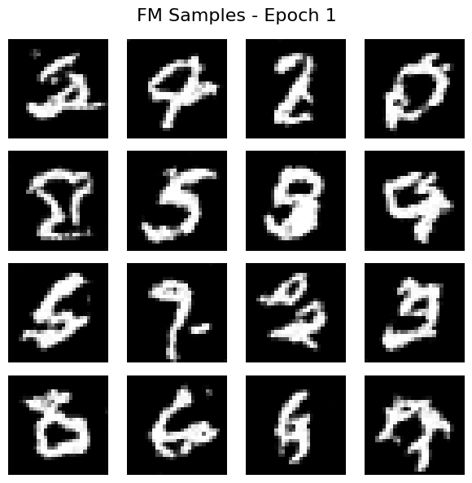
Epoch 1
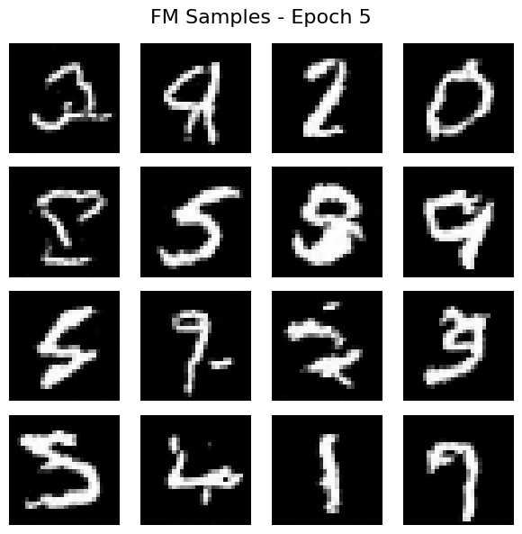
Epoch 5
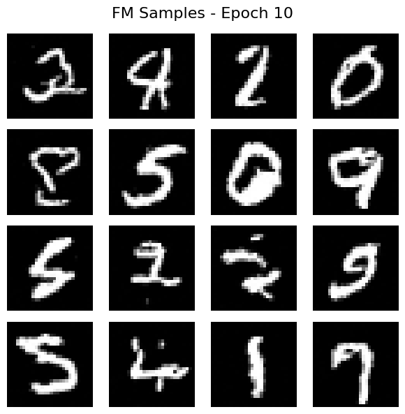
Epoch 10
2.4 Adding Class-Conditioning to UNet
To improve generation quality and control, we add class conditioning. This involves adding more FCBlocks to inject a class embedding (one-hot vector) alongside the time embedding. We also use dropout (p=0.1) on the class conditioning during training to enable classifier-free guidance.
2.5 Training the Class-Conditioned UNet
Training is similar to the time-only case, but with the additional class conditioning input and periodic unconditional training (dropout).
Class-Conditional Training Diagram
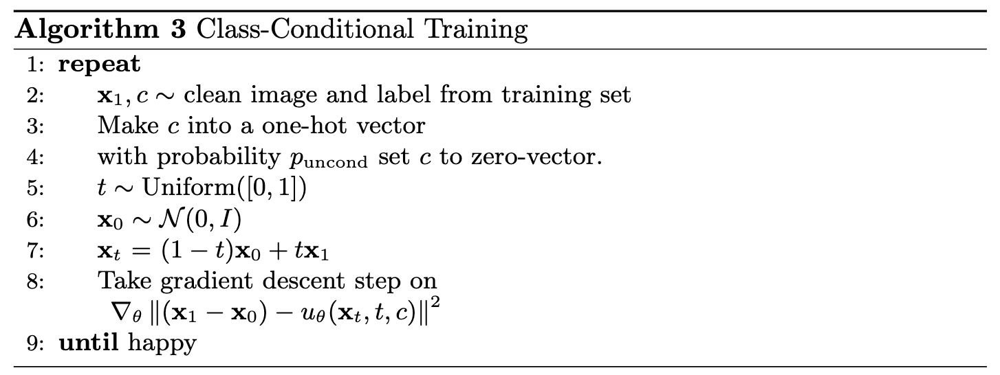
Algorithm B.3: Training the class-conditioned UNet.
Training Loss Curve
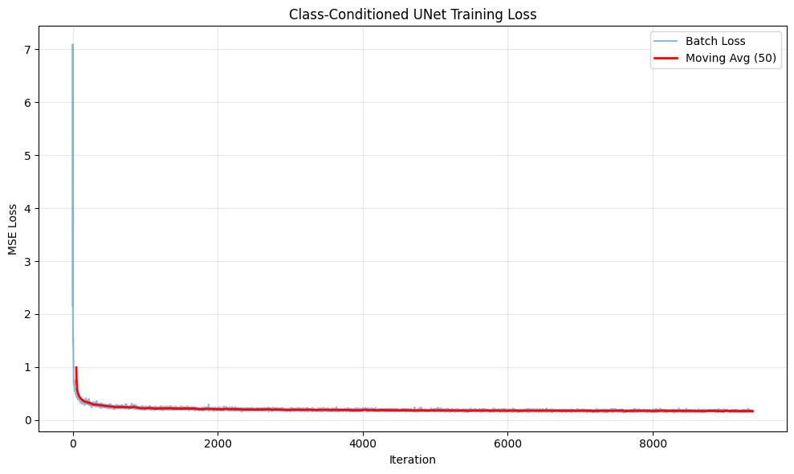
Training loss curve for the class-conditioned UNet.
2.6 Sampling from the Class-Conditioned UNet
We sample using classifier-free guidance with γ=5.0. This allows us to generate specific digits with higher quality.
Sampling Algorithm (Class-Conditioned)
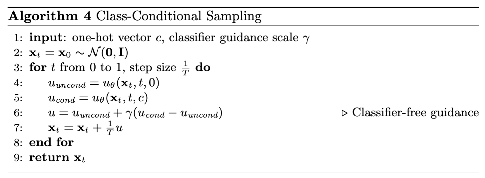
Algorithm B.4: Sampling from the class-conditioned UNet.
Sampling Results (Epochs 1, 5, 10)
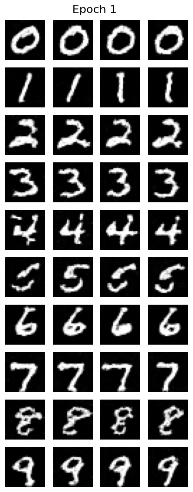
Epoch 1
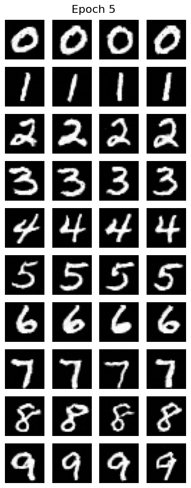
Epoch 5
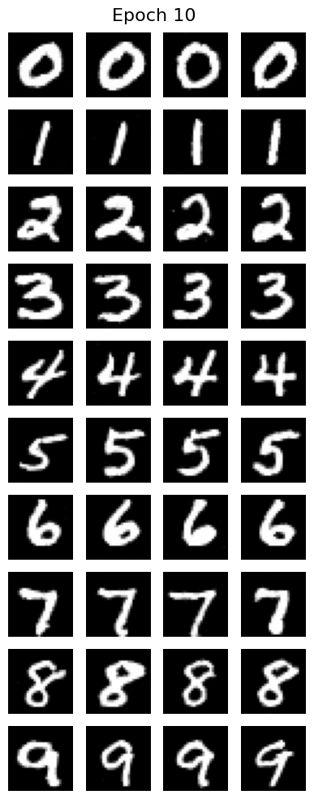
Epoch 10
Removing the Learning Rate Scheduler
When training without the exponential learning rate scheduler, I found that using a constant learning rate of 2e-3 worked best.
The scheduler originally began at 1e-2 to enable rapid early learning, then gradually reduced it (by a factor of ~0.794 each epoch) so the model could refine its weights and reach a stable state.
Keeping a fixed moderate rate (5e-3) throughout training proved problematic - the optimizer kept making steps that were too large in later stages, preventing convergence to a quality solution. This resulted in worse generated samples at epoch 10, even though the training loss appeared lower.
What Changed:
- Eliminated the exponential learning rate scheduler
- Applied a fixed learning rate of 2e-3 throughout training
- Kept the same total training time (20 epochs)
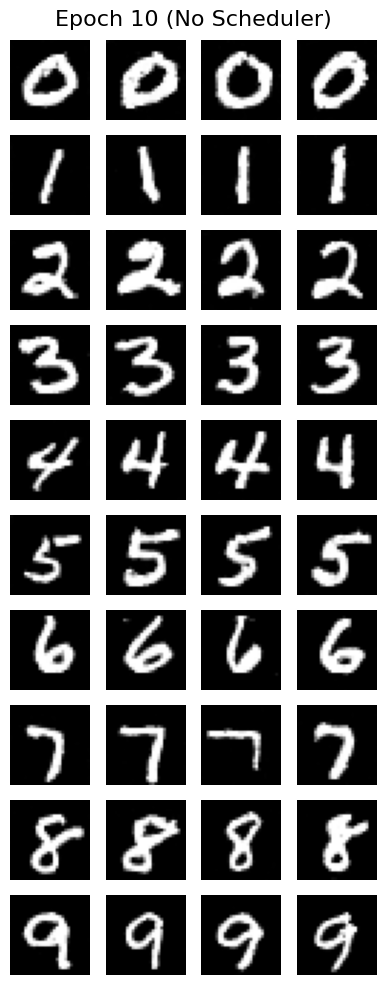
Sampling results after 10 epochs without a learning rate scheduler.